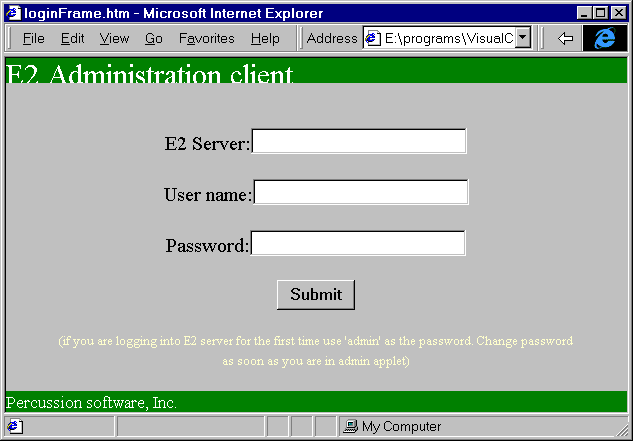
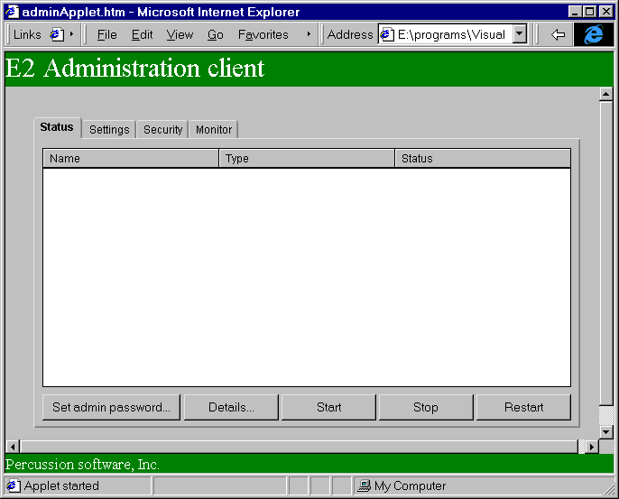

com.percussion.server.admin Overview
This package defines the Administration client UI for E2 server. The login page will be HTML with SSL connection to E2 server. Admin client will be invoked by the following URL
https://hostName/psxadmin.html.
This brings up the login page for E2 server administartion. Enter user name and administartion password. If this is the first time the admin client is called, use 'admin' for both user name and password.

Pressing OK on this page sends the login request for E2 server with the following options.
http://hostName/E2Hook?psxaction=adminOpen&loginid=loginid&loginpw=loginpw
When the E2 server gets the request, it first verifies the that the login information to make sure that the user is indeed administrator for this server. If this is successful, E2 server send the page with admin applet. From this point on all the communication will be between admin Applet and E2 server.

Note: If this is the first login into the admin client, the admin password should be chnaged
from 'admin' to some valid password.

This screen set the password in PSServer object of the server. There will be only one PSServer object for server. This will hold the admin password, Server ACL and other server related information. See com.percussion.server.PSServer class for details on this. Details on this dialog are shoen in com.percussion.server.admin.adminPassword class
In case server is not running, an common error page will be returned to the browser.
For details on all other admin actions and screens follow the corresponding calls in this package.